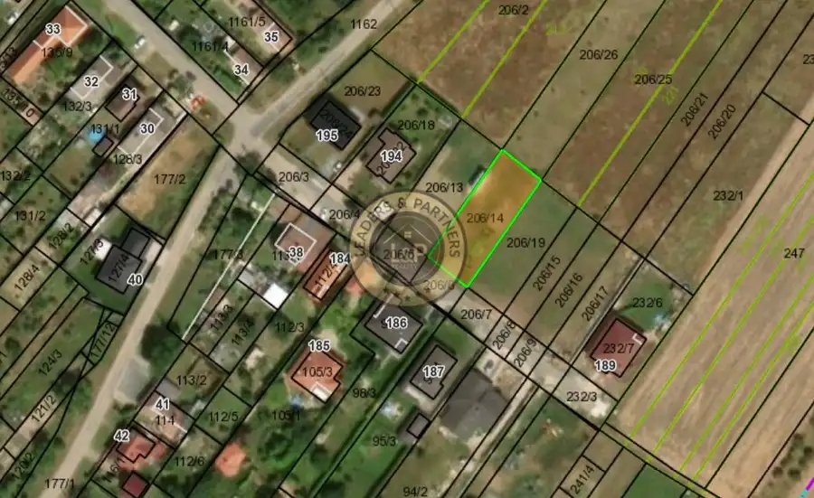
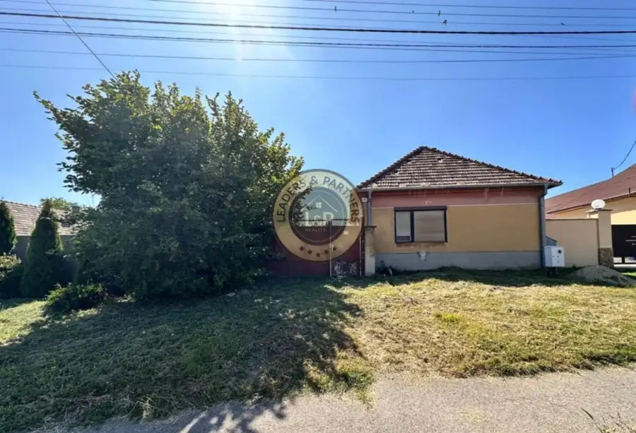
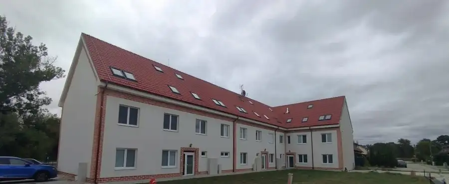
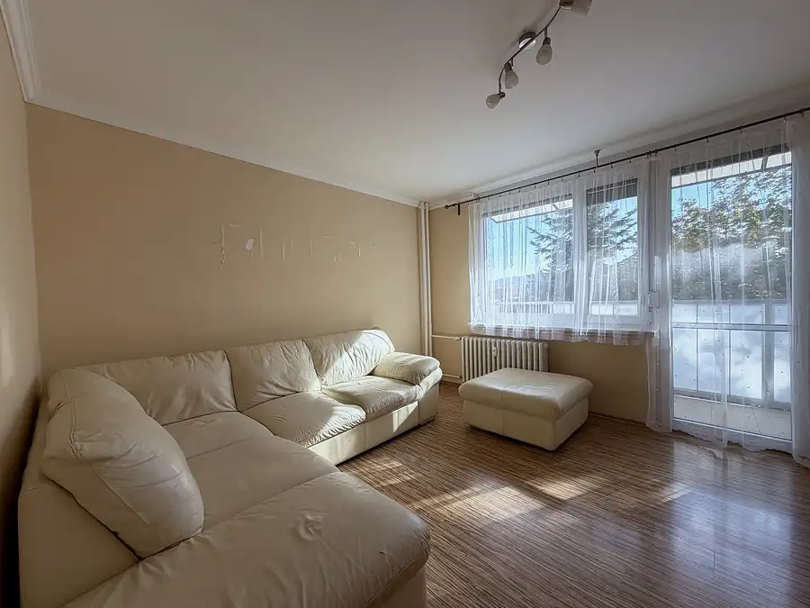
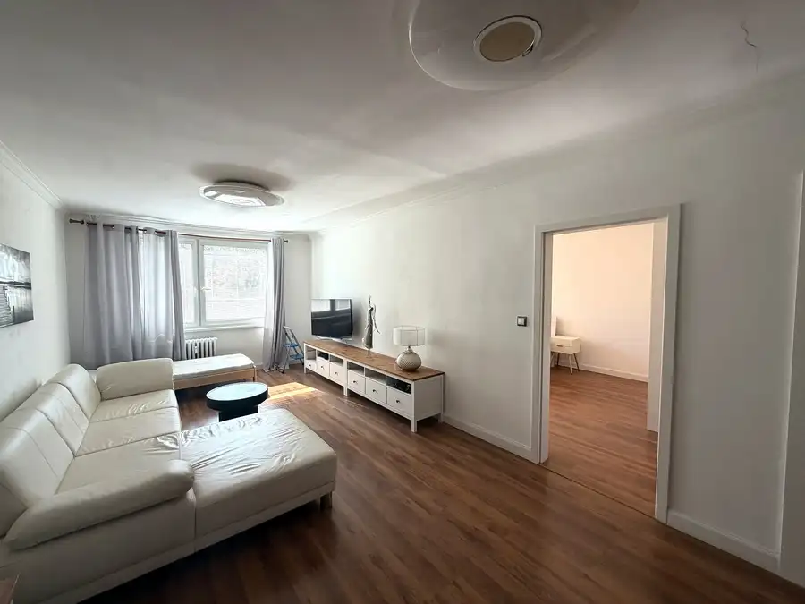
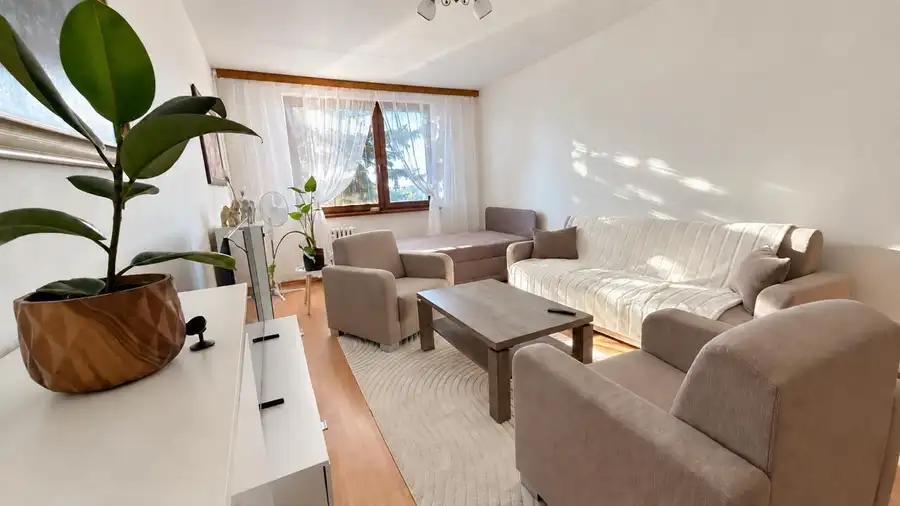
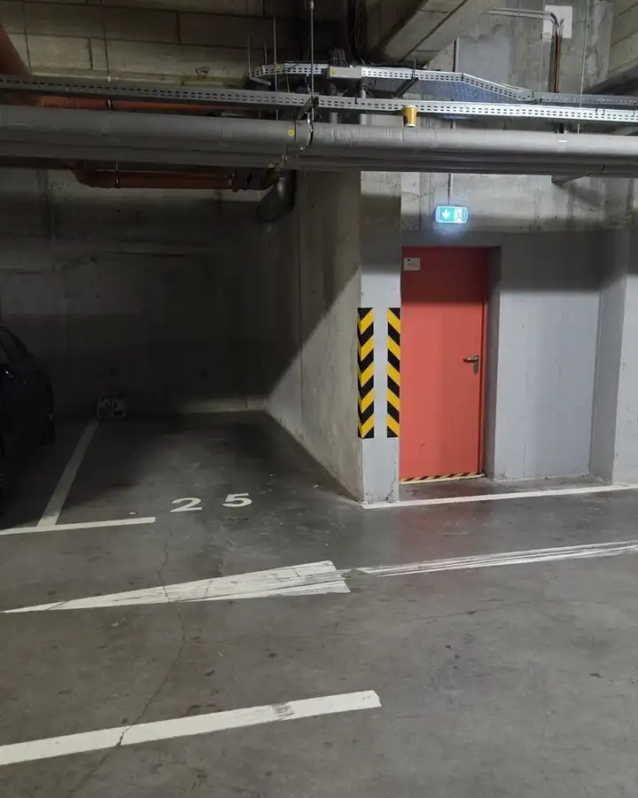

Aktuálna ponuka
12 nehnuteľností, predovšetkým byty, pozemky, chaty a chalupy. Každá má vlastnú stránku s fotkami, popisom a mapou.
Prezrieť ponukuJakub KrčRealitný maklér
Realitný maklér · In The City SK s.r.o.
Predaj a prenájom nehnuteľností · Trnava, Senica, Borský Mikuláš


 PozemokNové2
113 000 €Na predaj pozemok vhodný na výstavbu RD v Senici IBV Mlyny
Senica
642 m²
Leaders&Partners s.r.o. pobočka Senica ponúka na predaj pozemok vhodný na výstavbu RD v Senici IBV MlynyCelková rozloha pozemku je 642m2 z…
PozemokNové2
47 900 €Na predaj stavebný pozemok v obci Borský Mikuláš
Borský Mikuláš
380 m²
Leaders&Partners s.r.o. pobočka Senica ponúka na predaj stavebný pozemok v obci Borský MikulášPozemok má celkovú rozlohu 380m2 a nachádza sa…
Záhradná chatkaNové5
112 500 €Na predaj chata v krásnej prírode na Dobrej Vode
Dobrá Voda
96 m²
Leaders&Partners s.r.o. pobočka Trnava ponúka na predaj murovanú chatu v krásnej prírode na Dobrej Vode Murovaná chatka bola postavená v roku…
PozemokNové2
113 000 €Na predaj pozemok vhodný na výstavbu RD v Senici IBV Mlyny
Senica
642 m²
Leaders&Partners s.r.o. pobočka Senica ponúka na predaj pozemok vhodný na výstavbu RD v Senici IBV MlynyCelková rozloha pozemku je 642m2 z…
PozemokNové2
47 900 €Na predaj stavebný pozemok v obci Borský Mikuláš
Borský Mikuláš
380 m²
Leaders&Partners s.r.o. pobočka Senica ponúka na predaj stavebný pozemok v obci Borský MikulášPozemok má celkovú rozlohu 380m2 a nachádza sa…
Záhradná chatkaNové5
112 500 €Na predaj chata v krásnej prírode na Dobrej Vode
Dobrá Voda
96 m²
Leaders&Partners s.r.o. pobočka Trnava ponúka na predaj murovanú chatu v krásnej prírode na Dobrej Vode Murovaná chatka bola postavená v roku…

Pozemok5 106 900 €Na predaj stavebný pozemok v obci Pata Pata 722 m² Leaders&Partners s.r.o. pobočka Trnava ponúka na predaj pozemok vhodný na výstavbu RD v obci Pata Pozemok sa rozprestiera na pozemku s…
Byt10 115 000 €Na predaj 5 moderných bytov v obci Tomášikovo Tomášikovo 2-izbový71.12 m²1. podlažie Leaders&Partners s.r.o. pobočka Trnava ponúka na predaj 5 moderných bytov v obci TomášikovoTehlový bytový dom je zložený z 2 poschodí –… Byt10
110 000 €Na predaj 3iz. byt po čiastočnej rekonštrukcii v Senici
Senica
3-izbový64 m²1. podlažie
Realitná kancelária Leaders & Partners (pobočka Senica) vám ponúka na predaj príjemný a priestranný 3-izbový byt v obľúbenej lokalite na…
Byt10
110 000 €Na predaj 3iz. byt po čiastočnej rekonštrukcii v Senici
Senica
3-izbový64 m²1. podlažie
Realitná kancelária Leaders & Partners (pobočka Senica) vám ponúka na predaj príjemný a priestranný 3-izbový byt v obľúbenej lokalite na…

Byt10 172 900 €Svetlý 3iz. byt s loggiou v Piešťanoch na Komenského ulici Piešťany 3-izbový74 m²2. podlažie Leaders&Partners s.r.o. pobočka Trnava Ponúka na predaj priestranný 3-izbový byt s výmerou 74 m², na ulici Komenského v Piešťanoch. Byt sa…
Byt10 215 000 €3-izbový byt s loggiou, 82 m², kompletne zariadený, ul. A. Kubinu, Trnava Trnava 3-izbový82 m²3. podlažie Hľadáte byt, do ktorého sa môžete nasťahovať bez starostí o rekonštrukciu a zariaďovanie? Ponúkame na predaj priestranný 3-izbový byt s rozlohou 82…
Byt10 117 990 €Na predaj 2iz. byt po kompletnej rekonštrukcii s loggiou v Holíči Holíč 2-izbový69.5 m²2. podlažie Realitná kancelária Leaders&Partners s.r.o. pobočka Senica ponúka na predaj 2-izbový byt po kompletnej rekonštrukcii s loggiou v Holíči na…Tomuto výberu zatiaľ nezodpovedá žiadna ponuka. Napíšte mi, čo hľadáte.
Volám sa Jakub Krč. Som realitný maklér kancelárie In The City SK s.r.o. a pôsobím predovšetkým v lokalitách Trnava, Senica, Borský Mikuláš a Dobrá Voda (Trnavský kraj).

12 nehnuteľností, predovšetkým byty, pozemky, chaty a chalupy. Každá má vlastnú stránku s fotkami, popisom a mapou.
Prezrieť ponuku
Trnava, Senica, Borský Mikuláš, Dobrá Voda, Pata a okolie. Ponuku si môžete prezrieť podľa lokality.
Nehnuteľnosti v lokaliteOdhad trhovej ceny, príprava prezentácie, obhliadky, zmluvy a odovzdanie nehnuteľnosti.
Dohodnúť stretnutieKaždý špendlík je jedna nehnuteľnosť z mojej ponuky. Kliknite a pozrite sa.
© prispievatelia OpenStreetMap
Na čo sa pýtate najčastejšie, skôr než sa stretneme.
Odhad trhovej ceny vychádza z aktuálnych ponúk a predajov v lokalite, nie z cenníkových tabuliek. Podmienky Vám poviem pri prvom telefonáte.
Najprv obhliadka a odhad ceny, potom príprava prezentácie (fotografie, popis, inzercia), obhliadky so záujemcami, rezervačná zmluva, kúpna zmluva, návrh na vklad do katastra a odovzdanie nehnuteľnosti. O každom kroku viete vopred.
Najrýchlejšie cez WhatsApp alebo telefón. Termín stretnutia alebo obhliadky dohodneme podľa Vás.